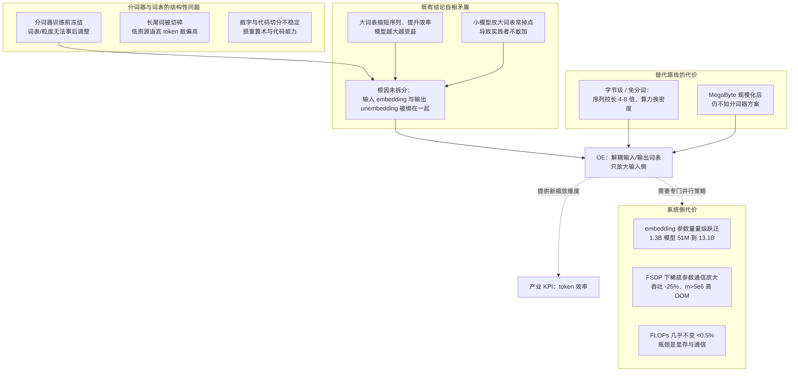
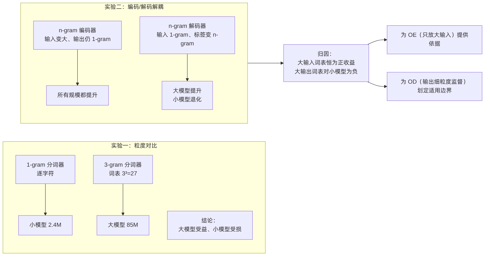
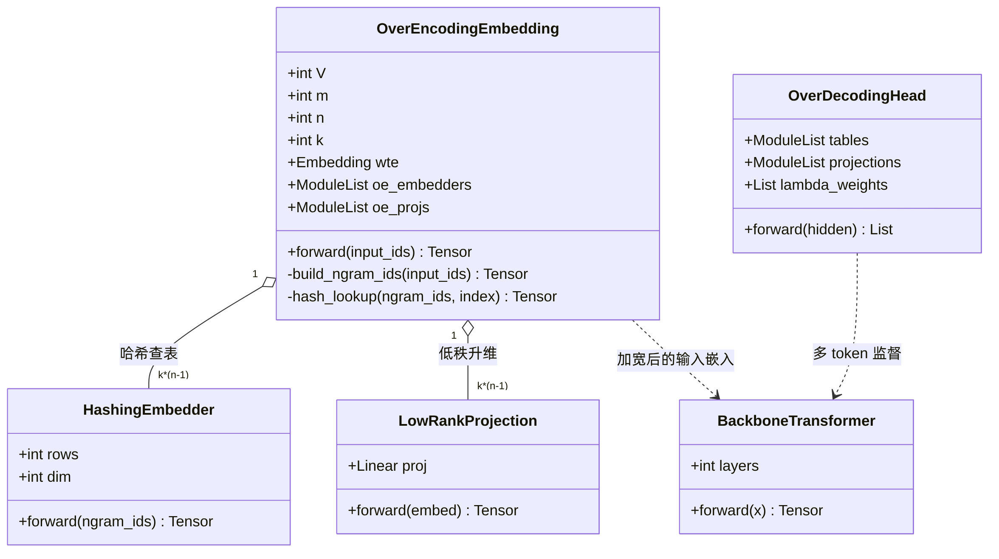
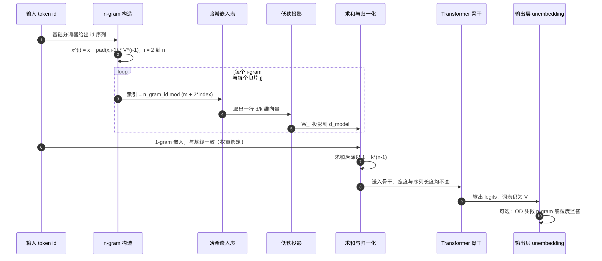
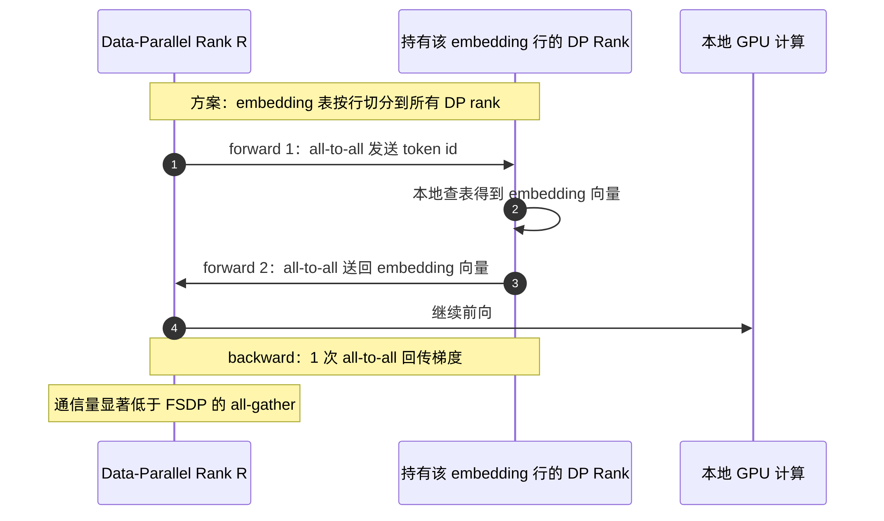
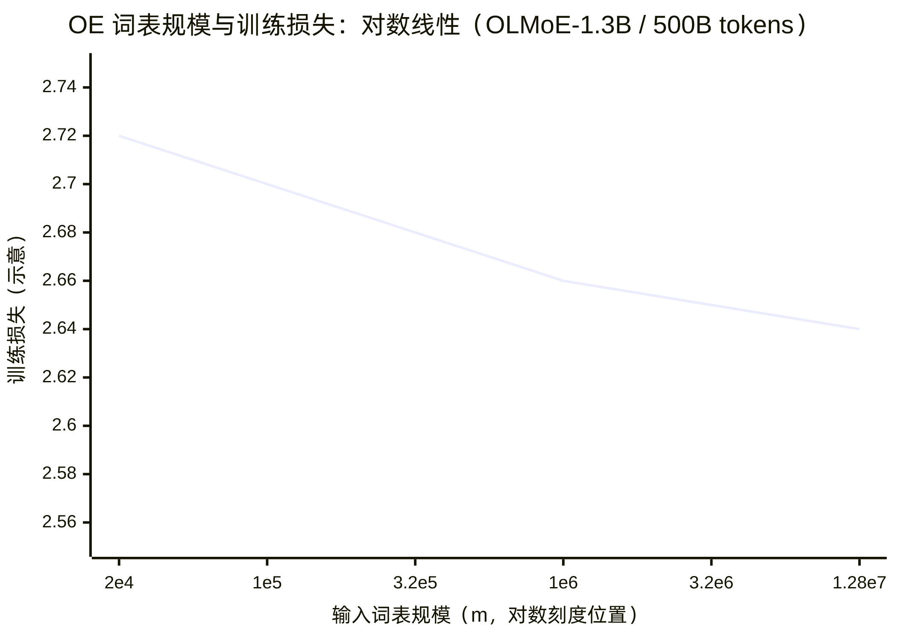
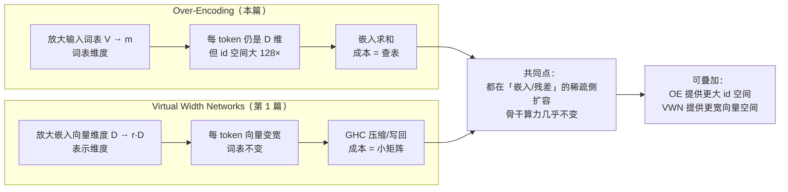
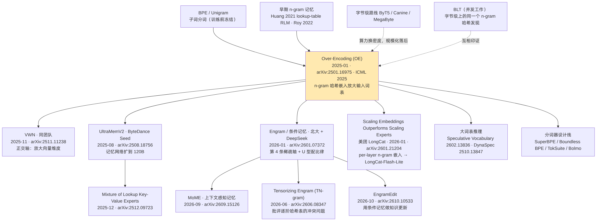
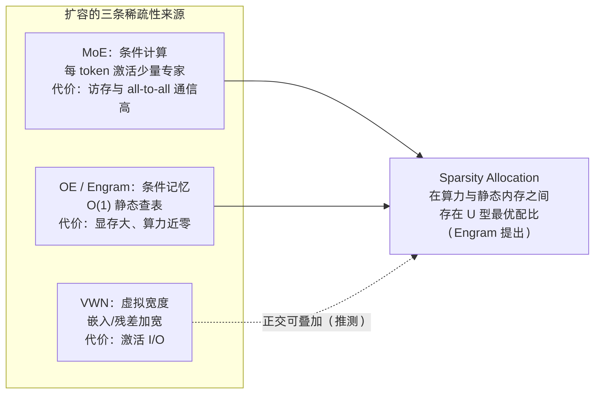
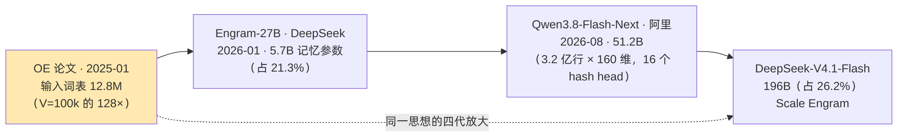

Seed 团队 Over-Encoding（OE）技术洞察 · 图表预览
对应文档：Seed-OE-技术洞察.md ｜ 渲染源：assets/mmd/*.mmd
图 1 · 分词/词表问题图谱（§1.6）

oe-d1-problem-map
图 2 · CFG 合成实验：输入/输出解耦（§2.2）

oe-d2-cfg-insight
图 3 · OE 类图（§2.7，UML classDiagram）

oe-d3-oe-class
图 4 · OE 前向传播时序图（§2.8，UML sequenceDiagram）

oe-d4-forward-seq
图 5 · embedding 专用张量并行（§2.9，UML sequenceDiagram）

oe-d5-embedding-tp
图 6 · 词表—损失对数线性律（§2.10.1）

oe-d6-vocab-scaling-law
图 7 · OE 与 VWN 的正交扩容轴（§2.12）

oe-d7-oe-vs-vwn
图 8 · 技术谱系：OE → 条件记忆/嵌入缩放（§3.3）

oe-d8-lineage
图 9 · 三条稀疏性来源与 Sparsity Allocation（§3.3）

oe-d9-sparsity-axes
图 10 · 稀疏查表参数规模的四代放大（§3.3）

oe-d10-memory-scale-growth